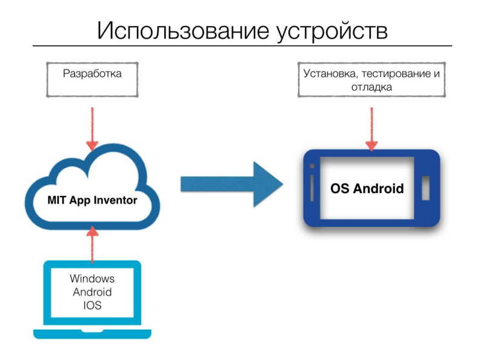

Основными задачами моей работы являлись:
Основной задачей моего проекта является создание приложения для подсчета инсулиновых единиц перед пиемом пищи. Это приложение подойдёт не только для детей, но и для старшего поколения.
Его главная задача собрать всю важную информацию, влияющую на изменение глюкозы в крови, подсчитать количество всех хлебных единиц, в выбранной человеком еде, и окончательным результатом будет количество инсулина, которое необходимо использовать для приема пищи.
К сожалению, с СД я знакома не понаслышке. Мой родной брат заболел в 5 лет, и вот уже 2.5 года он ежедневно поддерживает свой организм инсулином перед приемом пищи, а также ночной дозировкой. В этом году он впервые пошел в школу, и я вижу, как целый год ему тяжело справляться в школе с заболеванием. Он еще совсем мал, чтобы самостоятельно рассчитать себе нужное количество инсулиновых единиц и ему постоянно приходиться в школе отвлекаться, чтобы позвонить родителям. Поэтому мне и пришла идея о разработке мобильного приложения для детей болеющих СД, которое могло бы помочь им без больших затрат времени.
Мое приложение разработано для Android устройств, на основе MIT App Invertor. MIT App Inventor - облачная среда визуальной разработки приложений для платформы OS Android, для работы с которой необходимо наличие Google или Google Apps аккаунта, а построение программ осуществляется в визуальном режиме с использованием блоков программного кода. Сайт разработан на языке HTML + CSS, что важно для структурирования блоков.

В современном мире есть множество различных приборов и мобильных приложений, способные помочь заболевшим. Но проводя изучение, я смогла выяснить, что нет точного приложения, которое было бы доступно как для детей, так и взрослого поколения. В ходе работы над проектом мною был получен большой объем знаний в областях биологии, медицины, робототехники, программирования, информатики и технологии. Знания в области биологии и медицины я применял на этапах разработки идеи и написания программного кода, ведь очень важно, чтобы приложение верно считало количество инсулиновых единиц для человека.